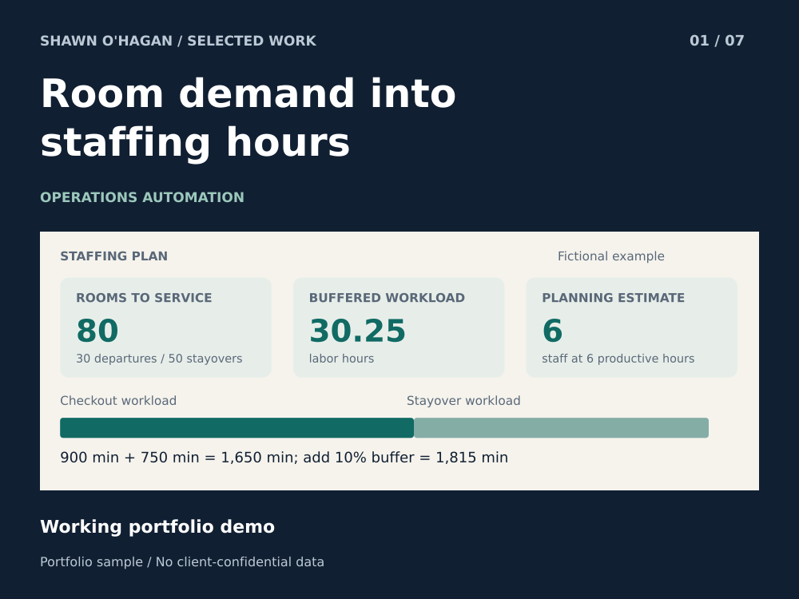
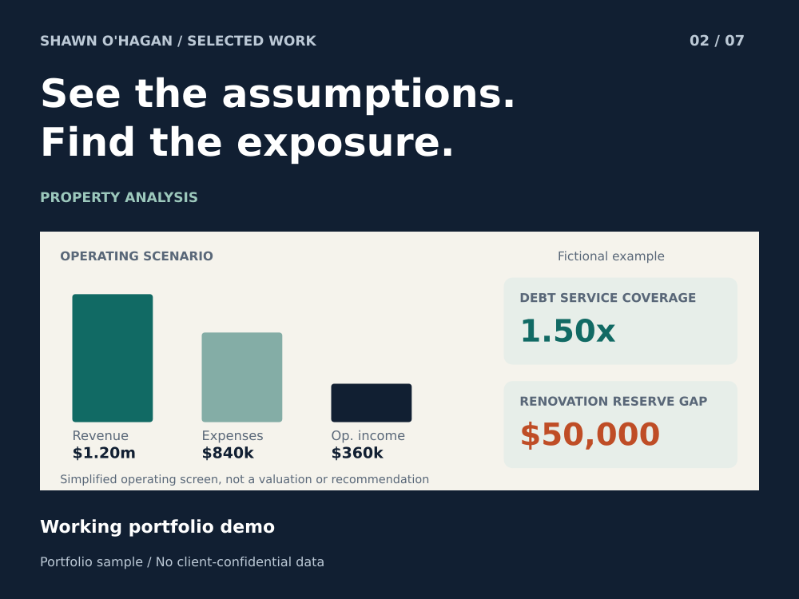
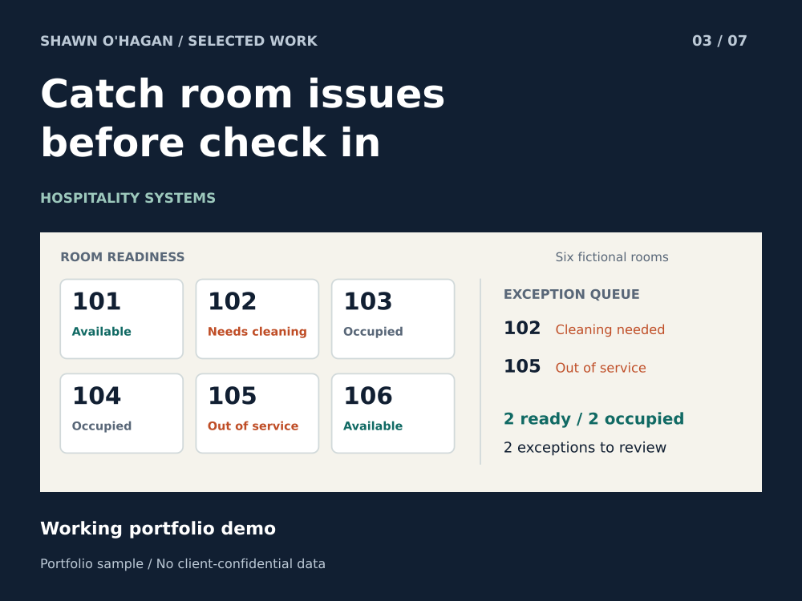
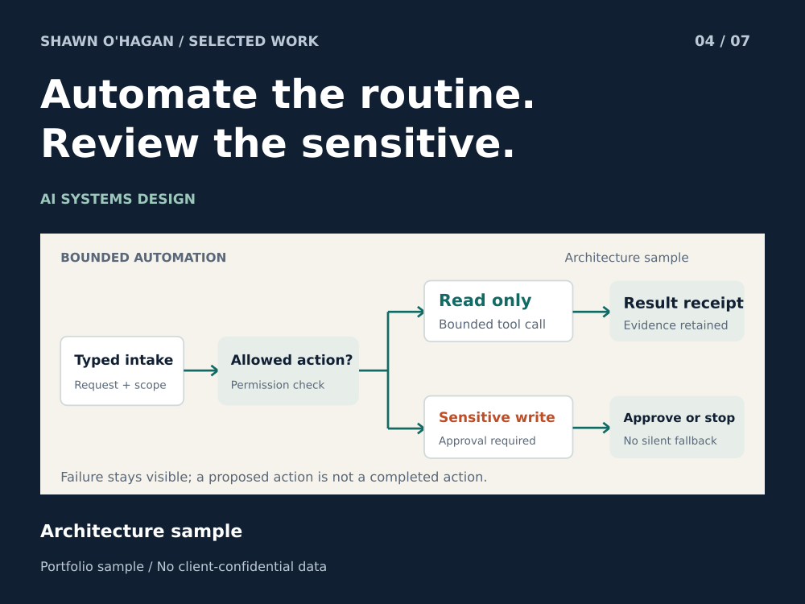
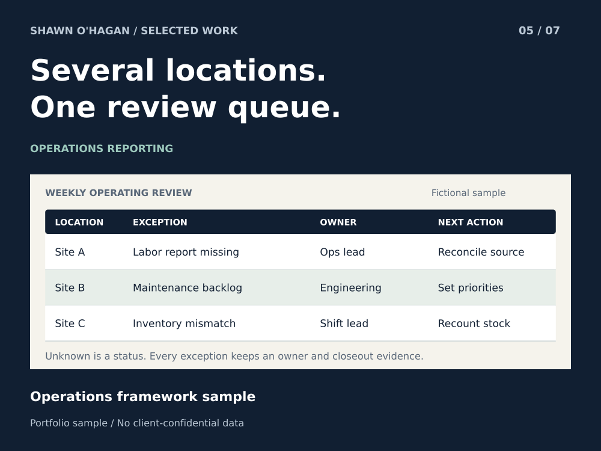
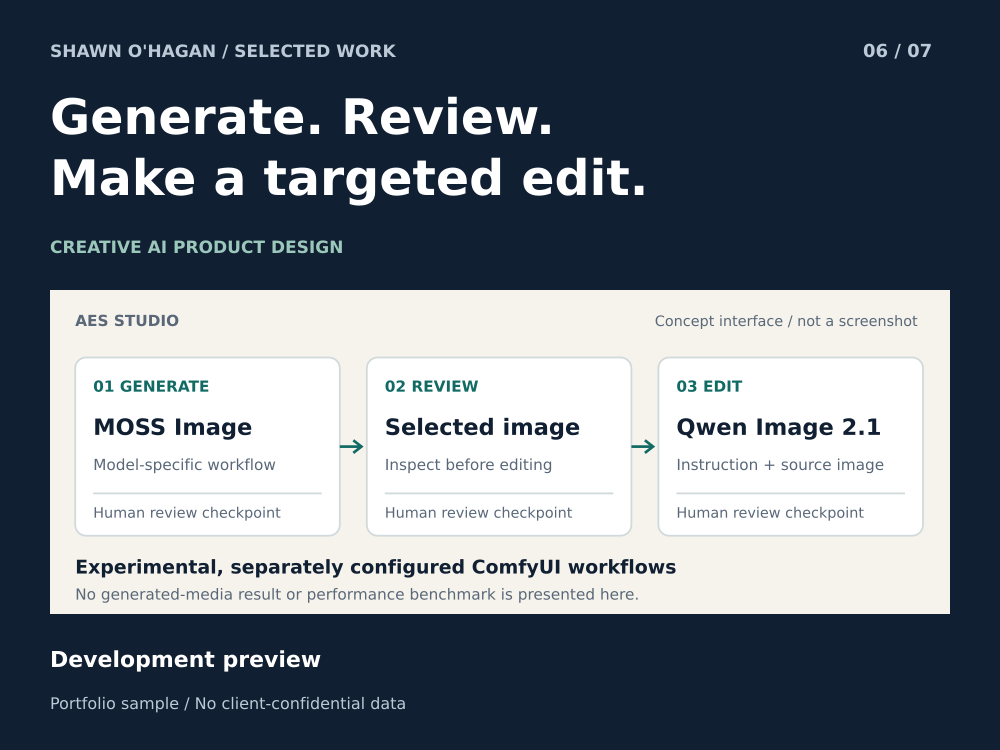
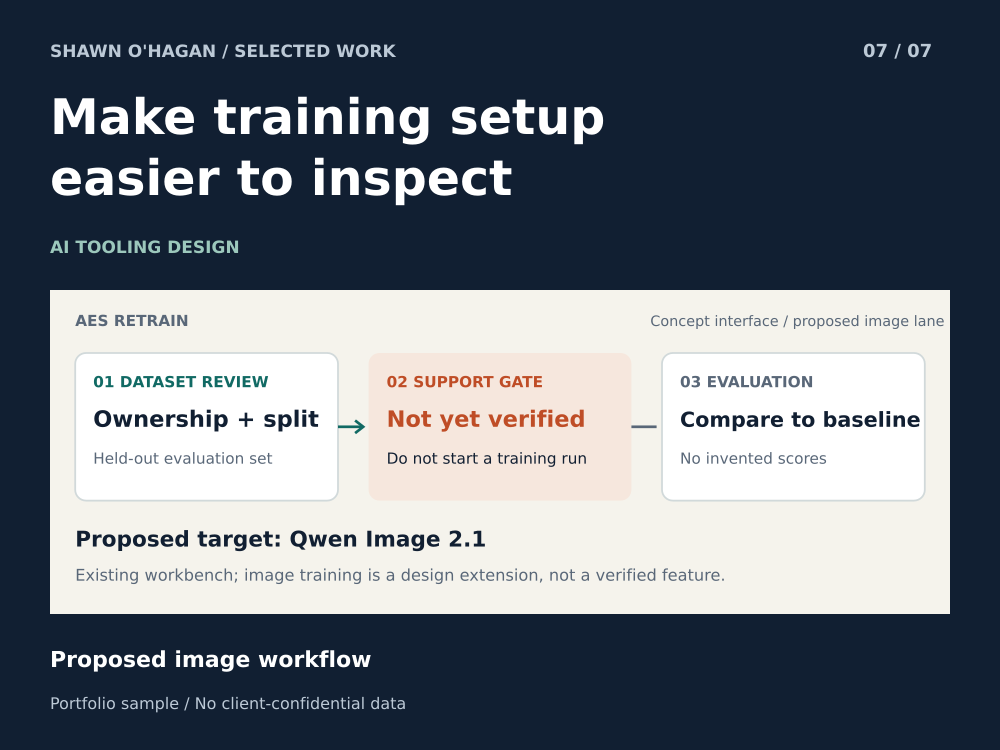

Hotel demand &
staffing planner
Turn occupied rooms, departures, and cleaning assumptions into an inspectable labor estimate. The working sample is deterministic; predictive forecasting is a separate design direction.
Hospitality experience. Technical curiosity.
I know what happens when a room isn’t ready, a handoff gets missed, or a report takes longer than the decision it’s supposed to support. That’s where I start building.
Shawn O’Hagan · CTO, AI Embedded Systems
Former hotel GM and director of operations across hotels and restaurants.
SELECTED WORK
Working demonstrations sit alongside architecture and product-design studies. Each project states what exists today and what remains proposed.

Turn occupied rooms, departures, and cleaning assumptions into an inspectable labor estimate. The working sample is deterministic; predictive forecasting is a separate design direction.

Bring revenue, operating costs, debt service, and renovation reserves into one first-pass screen. Show the arithmetic and flag gaps before deeper review.

Reconcile property-management and housekeeping states into an availability view. Separate rooms ready for assignment from the exceptions needing attention.

A design for routing requests, checking evidence, and pausing consequential actions for review. The portfolio shows the architecture; it does not expose the commercial system.

A practical management framework for reviewing site issues, assigning follow-ups, and keeping priorities visible. Informed by hotel and restaurant operations experience.

A limited view of AES Studio, focused on MOSS Image and Qwen Image 2.1 through external ComfyUI templates. Experimental template integration is not a claim of native model support.

A proposed Qwen Image 2.1 preparation and evaluation lane: dataset checks, run configuration, and evaluation records. No image-model training results or MOSS training support are claimed.
TRY THE LOGIC
Three small, working examples. No login, no upload, no hidden model call. Calculations run locally in this page.
Fictional sample data · deterministic demonstration
The calculation engine could not load. Keep this page with its src folder, then reopen it. The case-study PDFs remain available.
Estimate labor from rooms and task times; inspect the assumptions before using the result.
WORKLOAD RESULT
6people needed
Rounded up to cover the modeled workload within the productive hours supplied.
Default fictional scenario.
Stayovers = occupied rooms − departures. Base minutes = departures × checkout minutes + stayovers × stayover minutes. Add the percentage buffer, divide by 60 for labor hours, then divide by productive hours per person and round up.
This is a workload calculator, not a demand forecast, optimized schedule, staffing guarantee, or labor-compliance tool. It excludes non-room work unless covered by the stated assumptions.
Make a first-pass operating comparison, with debt coverage and renovation funding shown separately.
OPERATING SCREEN
1.50×debt-service coverage
REVIEW FLAGS
Default fictional scenario.
Net operating income = annual revenue − operating expenses. Debt-service coverage ratio = net operating income ÷ annual debt service; the ratio is not calculated when debt service is zero. Renovation reserve gap = the greater of zero or renovation budget − allocated cash.
This educational sample is not a valuation, underwriting decision, financing commitment, or investment recommendation. It does not model taxes, depreciation, acquisition costs, timing, or a complete capital structure. Flags are prompts for review, not a buy/sell verdict.
Change either source state and reconcile the sample. Out-of-service takes precedence; occupied rooms never become available merely because they are clean.
Rule order: out of service → occupied → vacant and dirty (not ready) → vacant and clean (available). An out-of-service room is flagged even if the PMS also reports it occupied. The PMS occupied count is independent of that priority.
This sample reconciles six manually supplied rows. It does not connect to a live PMS, inspect rooms, change reservations, or replace operational confirmation.
Inputs stay in this page. Nothing is submitted or stored; refreshing restores the sample.
HOW I WORK
My operations background shapes the questions I ask. Technical work earns its place when the people using it can understand the result and recover when something goes wrong.
Start with the report, workflow, or recurring problem. Agree on the inputs, the boundary, and what “working” means.
Keep the logic inspectable. Separate observed data, calculations, and model suggestions; require review where it matters.
Deliver readable files, sample data, verification steps, and honest limits. Another person should be able to continue the work.
A GOOD FIRST ENGAGEMENT
One recurring report. One spreadsheet cleanup. One workflow with a clear approval step. A small, bounded project is a good way to establish fit on Upwork.